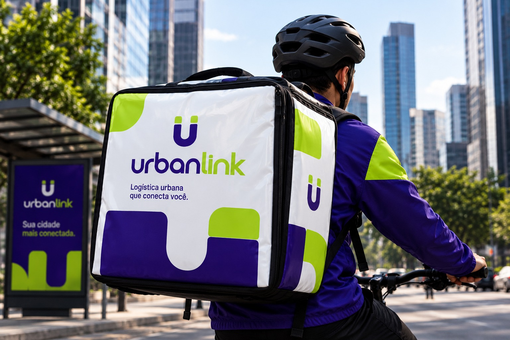
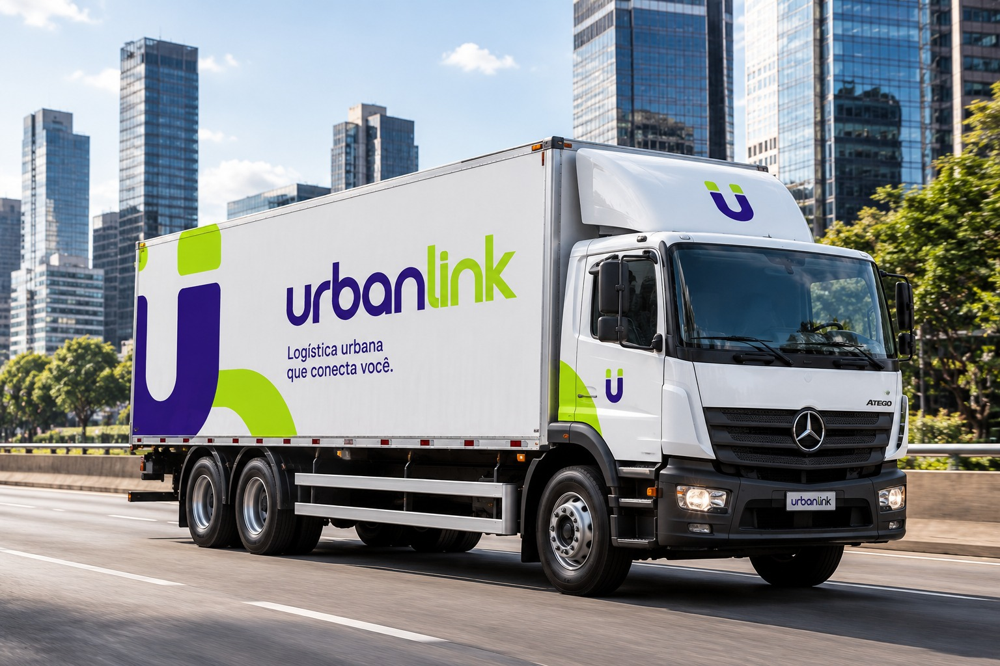

Visibilidade total
Acompanhe cada etapa do envio com atualizações simples e um caminho claro até o destino.
Rastrear um pedidoLogística urbana que conecta você
Entregas mais simples, rotas mais inteligentes e uma cidade melhor conectada para quem envia, recebe e entrega.

Uma rede, muitas possibilidades
Conectamos tecnologia e pessoas para deixar a logística do dia a dia mais clara e eficiente.
Acompanhe cada etapa do envio com atualizações simples e um caminho claro até o destino.
Rastrear um pedidoEscolha a modalidade ideal para a sua necessidade e organize suas entregas em um só lugar.
Ver opções de envioEmpresas, entregadores e pontos de entrega colaboram para uma logística mais acessível.
Conhecer parcerias
Cidade em movimentoQuem somos
Somos uma plataforma de logística urbana que aproxima empresas, consumidores e profissionais de entrega. Reunimos informações e opções de transporte para facilitar a comunicação e reduzir etapas desnecessárias.
Nosso objetivo é ajudar cada envio a encontrar um percurso mais eficiente, acessível e atento à cidade.
Converse com a nossa equipeFaça parte da rede
Escolha como quer participar: levando pedidos pela cidade ou ajudando sua comunidade a receber encomendas.